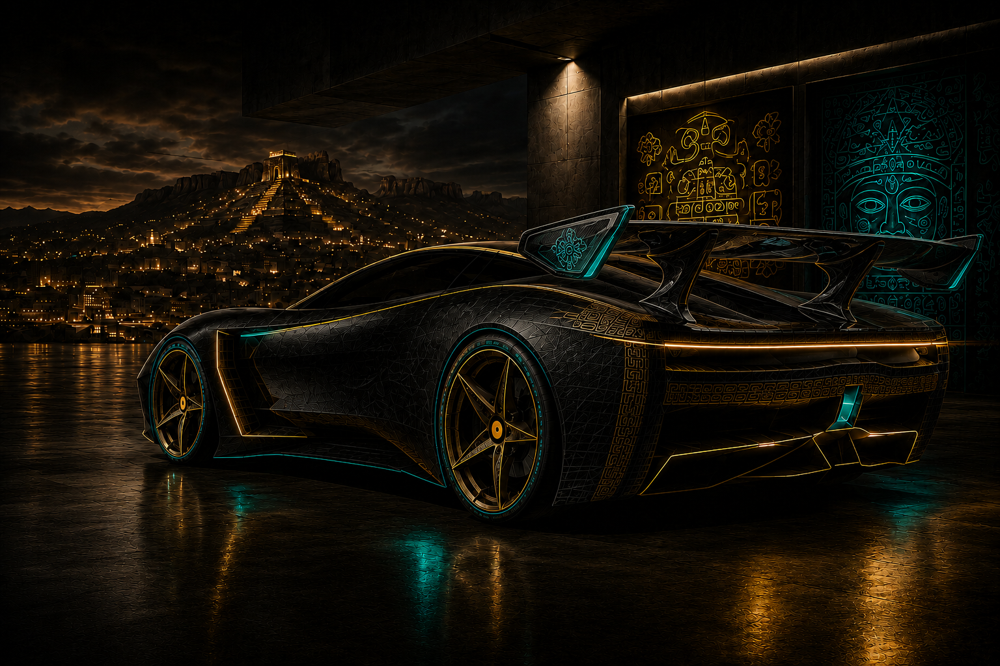
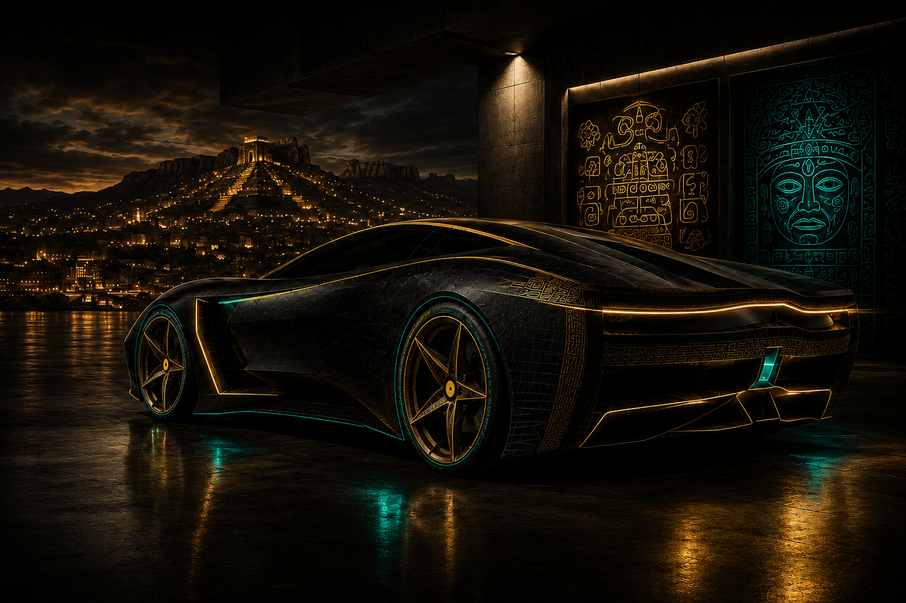
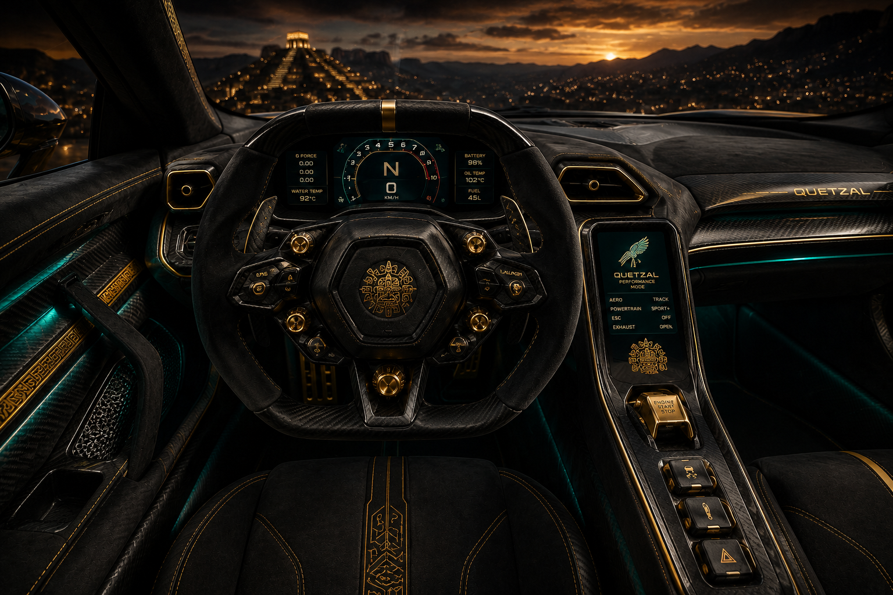
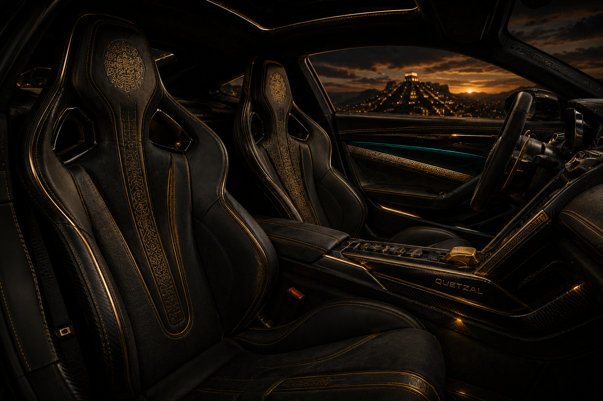
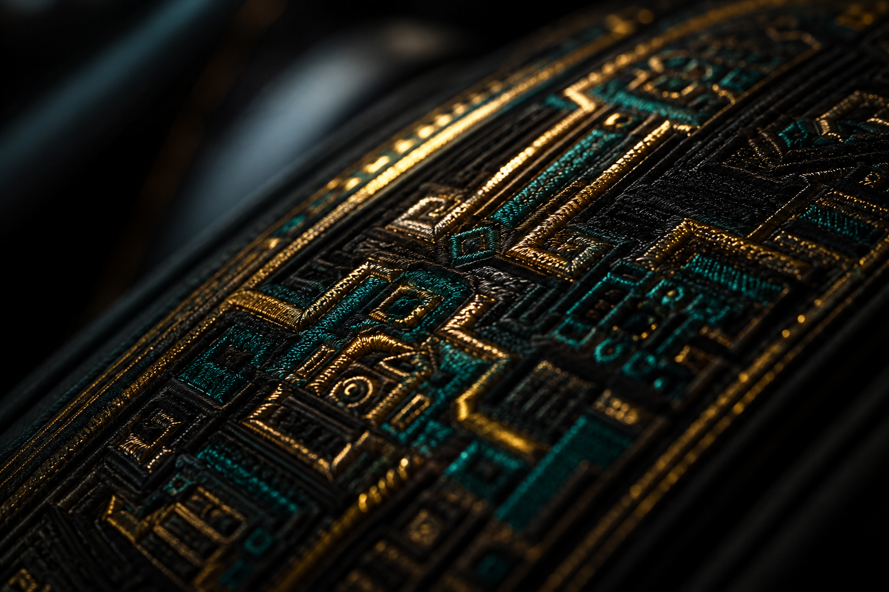

Hyperlocal Cyber-Prehispanic — México 2030
Una nueva generación mexicana rechaza el futurismo de exportación y reconstruye identidades híbridas donde la herencia indígena, la cultura urbana y la tecnología convergen en nuevas expresiones materiales, digitales y sociales. El diseño ya no llega de Tokio ni de Los Ángeles — emerge desde CDMX, Oaxaca, Monterrey y Chihuahua.




Pintura negro obsidiana con reflejos índigo bajo luz rasante. Iluminación quetzal reactiva. Superficies satinadas con micro-textura de greca.
Textiles inspirados en telar oaxaqueño reinterpretado digitalmente. Ambient lighting bugambilia–quetzal. Cobre ennegrecido y biomateriales.
Identidad regional embebida en la IA. Sonidos inspirados en instrumentos mesoamericanos sintetizados. Navegación contextual urbana hiperlocal.